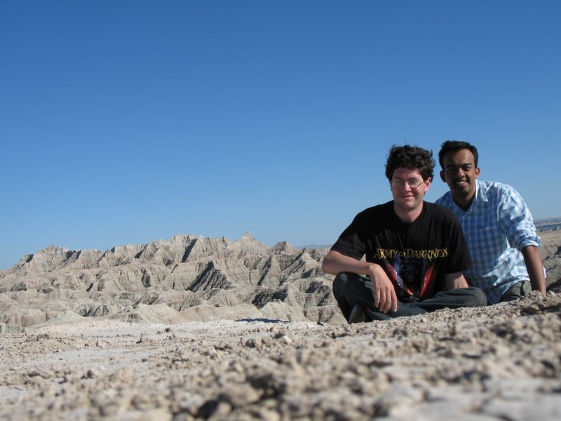

Caltech Memories -- The South Dakota badlands were the last major national park we saw. The trip was a wonderful experience! Here on, it was a fairly boring drive :) (August 2006)
First
|
Previous Picture
| Next Picture | Last |
Thumbnails
